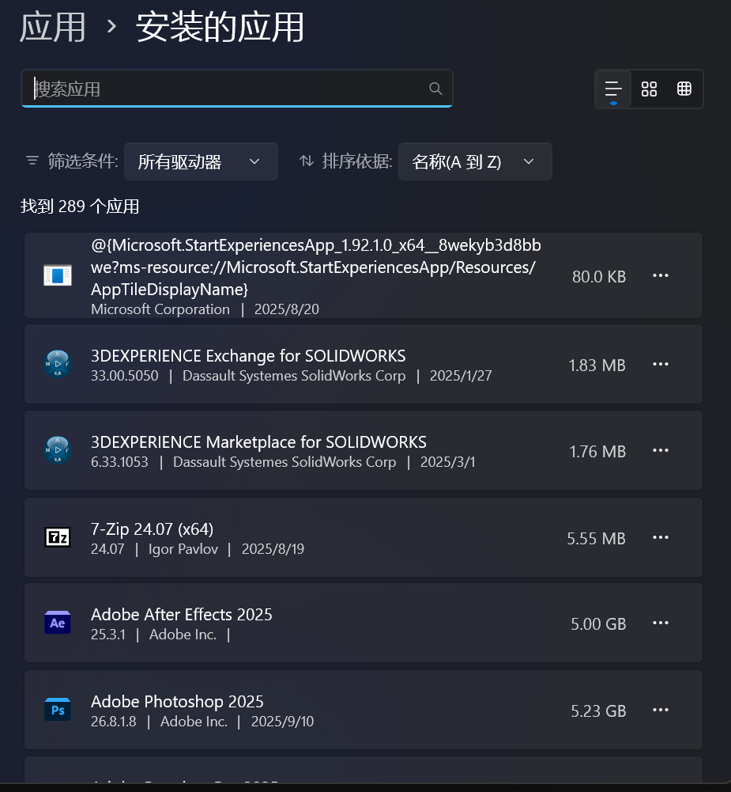
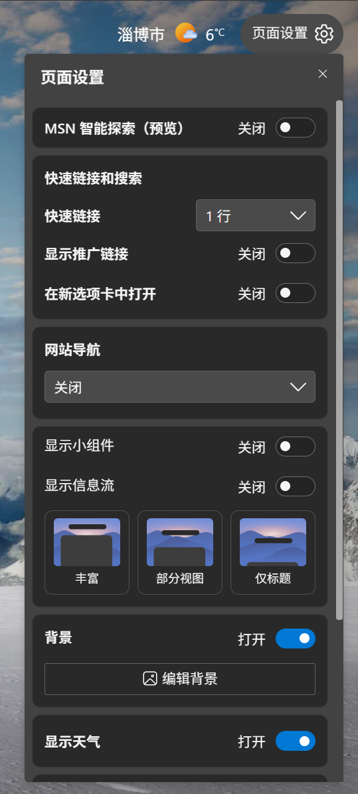
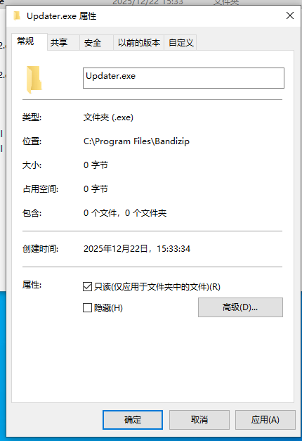
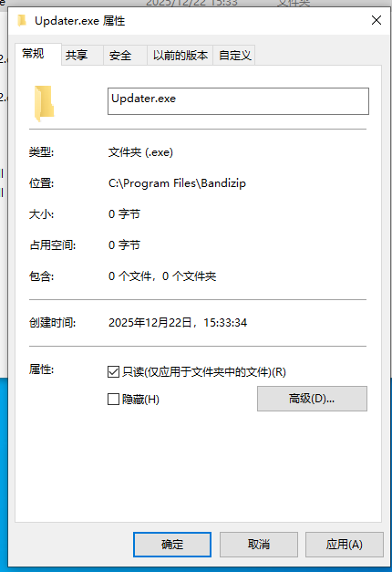
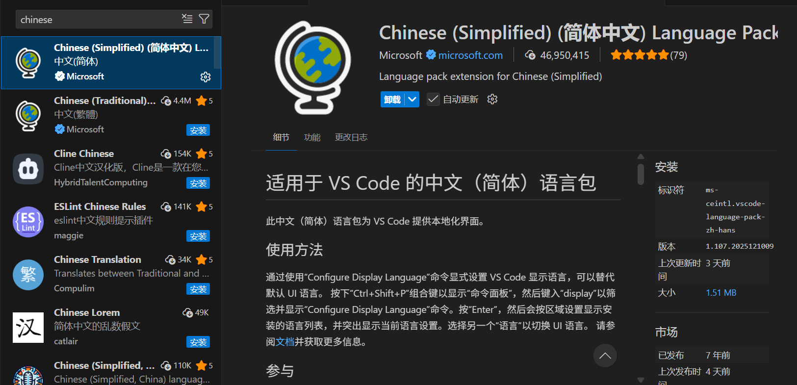
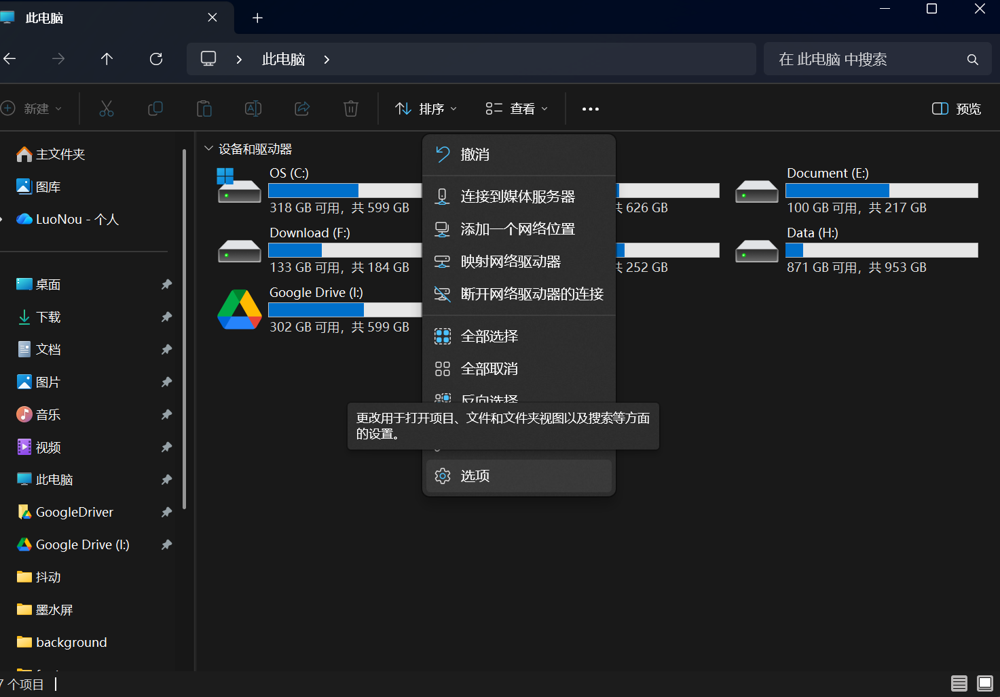
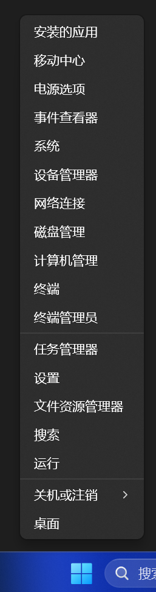
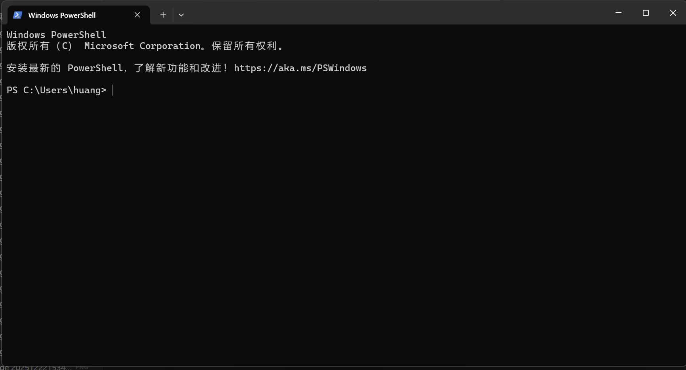

第零章 Windows 使用与开发基本素养
#前言
进入实验室，你要认识到：以前你用电脑可能是为了消费内容（看视频、打游戏、写文档），而现在你用电脑是为了创造工具。你需要掌握它，而不是被它糊弄。如果电脑基本技能都掌握不好，后期在你需要大量使用电脑时（特别是我们飞控方向）可能会遇到各种“灵异事项”，也会导致与队友交流不畅，引发各种问题。因此有必要使用一个章节介绍基础的电脑知识与开发素养。
鉴于大家前期基础掌握并不一致，此文可能会对你已知的知识来说没有提高，如果你认为自己对电脑已掌握透彻，可以选择跳过本章节，但我还是建议至少通读一遍看看有没有遗漏。
#第一节 电脑环境清理
是的，你没有听错，这一节我们要对你的电脑环境进行“大扫除”，因为我发现很多同学（甚至实验室的同学）的电脑环境堪忧，开机弹出一堆广告，右键菜单一堆无用的流氓软件，解压要vip，看图要vip，训练模型电脑风扇呼呼转，一看任务栏一堆流氓软件在后台抢资源。因此强烈建议如果你的电脑有如上情况，请务必跟着本节对电脑进行全面的清理。
要记住一点，电脑不像手机，电脑完全属于你，你想让它变成什么样它就可以成为什么样子，请不要一听好麻烦而屈服于这些流氓收费软件，如果这都嫌麻烦，可能实验室并不适合你。
#1.1卸载软件
电脑卸载软件的正确步骤是：
- 点击
 开始菜单 ，打开设置
开始菜单 ，打开设置 - 找到
 应用，点击安装的应用
应用，点击安装的应用 - 此时出现的便是Windows在你电脑上找到的已安装的所有软件，点击你要卸载的软件右边的三个点-卸载，请你大胆的将那些你自己没有安装过的却出现在你电脑上的一眼流氓的软件全部卸载掉吧
注意：有些全是英文的软件可能是你电脑上的开发环境，流氓软件一般很好辨认；有些流氓软件卸载时还会有阴险的选项让你保留或者更新，一定要自仔细检查卸载步骤
联想电脑的同学请看过来：
联想电脑一般会自带一堆流氓软件，请一定全部卸载掉：
- 联想电脑管家（放心卸载，卸载软件不可能会让你的电脑失去保修）
- 联想应用商店（一定要卸载，这就是纯纯流氓软件，什么广告自动安装软件都是它干的。你既然使用电脑了，就一定要离开应用商店这种愚蠢的安装软件方式）
- 联想ai浏览器（edge就够了，这玩意就纯纯广告机）
- 猎豹安全浏览器
- 2345好压
- Amazon 1button app（亚马逊购物助手）
- PC语点（这个好像是联想自己的ai，自行选择吧…）
- start menu
- 迈克菲全方位实时保护-网络安全实时防御套装
#1.2 关闭Windows广告
- 左下角小部件广告
 将这个源关掉
将这个源关掉 - Edge 新标签页广告
请按图示设置 - 其它类似广告你只要仔细找一定有开关可以关掉
#第二节 安装软件
刚刚说过在电脑使用应用商城是愚蠢的，那我们要去哪下载安装软件呢？就是官方网站，利用搜索引擎找到官方网站，一般搜索引擎都是会标注的（推荐国内使用bing，科学使用Google）。请一定认准官方网站，可以通过搜索引擎标注、观察网址、观察网站布局等方法判断是否是官方网站。
在此推荐几个完全免费无广告的常用软件
#压缩软件
- bandzip （图形化做的好，虽然最近加入了广告，但可以通过下载旧版本并阻止其更新来规避广告）
链接： https://dl.bandisoft.com/bandizip.old/BANDIZIP6-SETUP.EXE?2
安装时记住你的安装目录（即目标文件夹）这里便是该电脑软件本体存在的地方

安装好后点击选项-设置将 自动更新关闭，然后进入该软件的安装目录（如果忘记自己的安装目录的话也可以通过在桌面bandzip图标右键-更多选项-打开文件所在位置打开）
自动更新关闭，然后进入该软件的安装目录（如果忘记自己的安装目录的话也可以通过在桌面bandzip图标右键-更多选项-打开文件所在位置打开） 找到Updater这个程序删除并在这个目录下新建一个文件夹叫做Updater.exe
找到Updater这个程序删除并在这个目录下新建一个文件夹叫做Updater.exe 右键该文件夹属性，点击两下只读选项让其变成对勾点击确定（这几步的作用是不让bandzip重新创建Updater.exe程序，这样就没有烦人的更新提醒了）
右键该文件夹属性，点击两下只读选项让其变成对勾点击确定（这几步的作用是不让bandzip重新创建Updater.exe程序，这样就没有烦人的更新提醒了） - 7-zip （该软件图形化做的不是很好，但解压和压缩性能非常强）
链接： 7-Zip 选择你的电脑平台下载并安装。使用教程请自行搜索，在此不再赘述
#功能超全超轻量化的编辑器
VScode，飞控的同学请务必安装并熟悉该编辑器，并习惯着使用它，后续无论是视觉还是主控，大部分的时间都在使用这个软件
请不要尝试在树莓派、香橙派等机载电脑上安装Pycharm等重量级IDE
官网链接：Visual Studio Code - The open source AI code editor
安装后可以点击齿轮按钮（设置）- plugin（扩展）搜索chinese安装中文包，安装成功后记得看右下角弹窗问是否切换到中文，一定要点击是(yes)，然后重启VScode软件
#搜索神器
Everything 官网链接： voidtools
#第三节 文件与路径管理
这是最基础但最容易“翻车”的地方。飞控涉及大量的仿真数据、代码文件和编译过程。
- 文件扩展名与隐藏项目：
- 请打开“文件夹选项”开启“显示文件扩展名”和“显示隐藏文件”
点击选项 找到隐藏文件和文件夹，点击显示隐藏的文件、文件夹和驱动器
找到隐藏文件和文件夹，点击显示隐藏的文件、文件夹和驱动器
找到隐藏已知文件类型的扩展名，取消勾选
- 请打开“文件夹选项”开启“显示文件扩展名”和“显示隐藏文件”
- 路径命名规范：
尽量不使用中文路径！尽量避免路径中包含空格！中文路径经常会导致一些不支持中文编码的软件乱码，带空格的路径可能会导致命令错误
例如：在命令行（Terminal/CMD/PowerShell）中，空格默认用来分隔命令和参数，此时如果有一个带空格的路径，可能就会被识别成两个参数而导致运行错误
#第四节 习惯使用命令行
右键开始菜单，选择终端。或者使用win+R键，输入powershell。你便进入了Windows的命令行页面，在图形化没有这么发达的年代，人们都是使用命令的方式操作电脑的，后面我们使用的linux系统几乎全部操作都在使用命令，所以请务必习惯使用命令。
Windows早期的命令行叫做CMD，其因为非常难用，十分老旧，故我们不再使用cmd作为我们的命令行窗口
下面我们进行一些常见的命令行操作：
输入 ls 按下回车
你看到了什么
可以看到，你当前目录下的文件全部被列出来了
Windows中列出当前目录下所有文件的命令其实是
dirPowerShell为了适应使用习惯（Linux系统的列出当前目录下所有文件的命令才是ls），为dir加了一个别名ls因此在cmd中输入命令ls会出现'ls' 不是内部或外部命令，也不是可运行的程序或批处理文件。的提示
请继续尝试以下命令
| 命令 | 作用 |
|---|---|
cd <目录> |
进入某个目录 |
mkdir <目录名> |
新建指定名称的目录 |
rm <名称> |
删除某个文件或目录（Linux中删除目录需要添加-r参数，例如：rm -r test |
- 请尝试习惯使用终端运行你的python脚本
python xxx.py
#第五节 认识环境变量
大家在初步接触python时一定遇到过在终端中打python命令却提示'python' 不是内部或外部命令，也不是可运行的程序或批处理文件。的问题。安装python时老师一般都会要求在安装界面把 这个选项勾选。这里的PATH便是我们要介绍的环境变量。
这个选项勾选。这里的PATH便是我们要介绍的环境变量。
- 什么是 PATH：用通俗的比喻：PATH 就是系统的“通讯录”。你在命令行喊“Python”，系统得去通讯录里查 Python 住哪（软件本体位置）。没有配置 PATH，系统就找不到对应的人在哪里。
- 如何修改 PATH：
右键此电脑，选择属性
向下滑动，找到高级系统设置并单击打开
右下角找到环境变量并单击打开
这里面就存着系统的各种环境变量，其中上方用户的变量指的是多用户系统中你自己的用户变量，这些变量只对你自己有效。下方的系统变量是对整个系统有效的
找到系统变量中的Path变量名称，双击打开它，这里就是你电脑上所有已经配置的软件的环境变量了
请试着在任意目录上创建一个新的目录，并在其内部新建一个 helloworld.bat 的脚本文件，写入
echo Hello World!，然后在系统环境目录的Path环境变量中添加该目录，实现在终端任何地方都输入helloworld命令即可以运行 helloworld.bat 这个脚本文件
#第六节 远程连接基础
在飞控学习过程中，你很快会发现一个现象——你操作的电脑，往往不是真正干活的那台电脑：例如你想对无人机的机载电脑做一些修改或者上传一些文件，而你旁边又没有现成的鼠标键盘及屏幕；或者无人机正在飞行时你想远程监看一下机载电脑的状态。这个时候，你就需要 SSH（Secure Shell）了。
简单来说，SSH 就像是“夺舍”：它允许你坐在宿舍里，通过你的笔记本键盘，直接控制其它地方的服务器或者几公里外的一台无人机，就像你就坐在它们面前一样。
目前Windows10及以上已经默认装好了SSH环境，打开终端，输入ssh命令，出现usage: ssh ...等一大串内容，那么说明你系统上的SSH已经准备好为你所用了
打开VScode-设置-扩展，搜索ssh，找到Remote - SSH这个插件，安装好后可以看到你的VScode左侧出现了 这样的按钮，这里我们以后就可以通过VScode中的ssh远程连接进行文件编辑操作了。
这样的按钮，这里我们以后就可以通过VScode中的ssh远程连接进行文件编辑操作了。
SSH 基本的命令格式是ssh <用户名>@<目标IP>
这里我们只对SSH命令做一个初步的介绍，后续我们还会详细为你介绍这个你可能后面70%以上的时候都会用到的非常轻量常用且安全的工具
#第七节 版本控制基础
经过几轮实验室考核，你一定体验过这样的经历：
- 昨天代码跑的好好的，今天稍微改了一下代码就跑不起来了
- 我想回到之前测试没问题的代码，但是不记得改了哪些代码了
- 项目文件夹里放着：
PID_v1.c,PID_v2_改.c,PID_最终版.c,PID_死也不改版.c
在实验室后续学习中，我们会遇到更多类似的事情，为了追求高效，拒绝这种原始的各种“最终版”文件。你需要的是 Git。
#Git是什么
不要被专业术语吓到，简单来说，Git 就是一个“时光机”。
- 它能记录你每一次代码的改动（哪怕只是改了一个标点）。
- 它能让你随时“穿越”回任何一个时间点（比如昨天下午 3 点代码还能跑通的那个时刻）。
- 它是全人类程序员通用的语言。
#安装 Git (Windows)
前往GIt官网 Git - Install for Windows，找到Git for Windows/x64 Setup，点击链接下载并安装，对于初学者来说，默认选项一路next即可
#配置自己的Git用户
Git 安装好后，你不能直接开始用，必须先告诉它“你是谁”。否则以后你提交代码时，Git 不知道该把这笔功劳（或这笔烂账）记在谁头上。
打开终端，输入(请替换双引号内的内容)
1 | git config --global user.name "你的英文名" |
如果一切顺利，输入git config --list 如果可以看到你刚刚配置的user.name和user.email信息，那么恭喜你，身份注册成功。
#让 Git 可视化（VS Code 插件）
虽然熟练后基本都是用命令行写 Git，但对于刚入门的你，我们需要一个图形界面来辅助理解。
进入VScode-设置-扩展，搜索Git Graph并安装
#如何使用Git
你可以尝试使用Learn Git Branching这个网站来理解Git这个时光机的使用方法，我们后面也会单独出教程教大家如何使用Git这个神奇的工具（应该不会鸽掉）
#后记
这是我们第一次尝试使用文本教程的方式交给大家一些知识，这对于习惯看视频或听老师讲的同学来说可能非常不友好，但我们希望你进入实验室后可以转变学习观念，不再是被灌输式被动教育而是主动学习知识，包括后续我们学习一个新的硬件几乎都是通过查看它的文档来学习的（越往深处学，相关教程包括视频会指数级的减少）。所以为了帮助能站在顶尖的未来的你，我们大胆的尝试了这种方式，不知道各位同学阅读后的理解和感受是什么样的。是觉得晦涩难懂，还是浅显无味，请大家通过qq群或者评论的方式反馈给我们，感谢同学们的理解与支持。